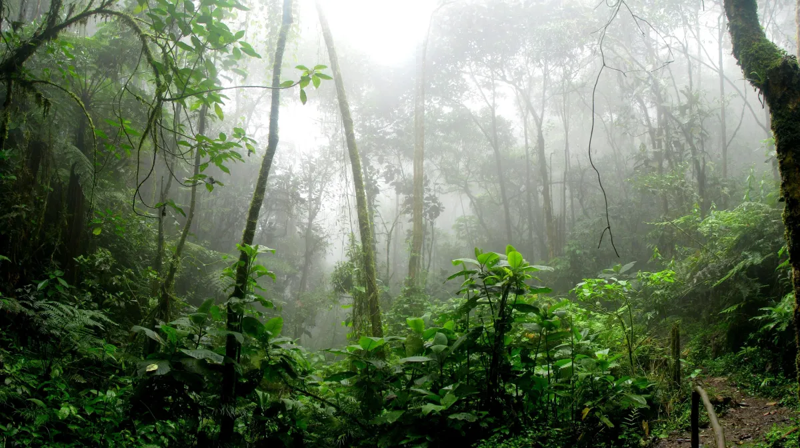

Clima na Amazônia

A Amazônia, frequentemente chamada de “pulmão do planeta”, é uma vasta região que abriga a maior
floresta tropical do mundo e também desempenha um papel crucial na regulação do clima global.
Na diversidade amazônica, há de se considerar que espécies diferentes que se desenvolvem em condições edafoclimáticas
idênticas podem exibir uma diversidade de tipos característicos que evidenciam suas diferenças na constituição genética de
cada espécie, podendo apresentar essas diferenças, mesmo entre variedades da mesma espécie, com propriedades que as tornam
adaptáveis às condições ambientais de cada ecossistema. Por isso, é oportuno ponderar que a potencialidade genética de
cada espécie só poderá ser definida avaliando-se seu crescimento e desenvolvimento numa gama de ambientes diferentes.
Assim, o clima é um dos recursos naturais mais importantes que intervém no desenvolvimento do solo e dos vegetais, preenchendo
papel decisivo no planejamento da atividade agrícola e florestal.
Conforme a Classificação de Köppen, nos estados da Amazônia ocorre, especialmente, tanto o clima do tipo Amw, o qual
é caracterizado como tropical sem estação seca definida, quanto o clima Ami, que tem um deficit hídrico no período seco que se
estende por até 4 meses. Estes são os tipos de clima quente, úmido e chuvoso predominantes na região.
A densa floresta absorve grandes quantidades de água trazidas pelas chuvas abundantes que ocorrem na região. Parte dessa
água é absorvida pelas raízes dos vegetais e é componente essencial para o processo do equilíbrio térmico, transporte de nutrientes e no processo da fotossíntese da
vegetação. Uma fração dessa água absorvida pelas plantas é liberada pelas folhas na forma de vapor, processo este denominado
de transpiração. Outra é evaporada e outra é infiltrada no solo. A água proveniente da evaporação e da transpiração condensa e
forma as nuvens na atmosfera, até saturar e precipitar na forma de chuva.